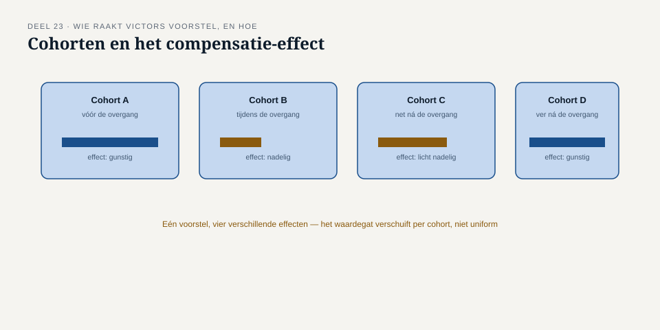
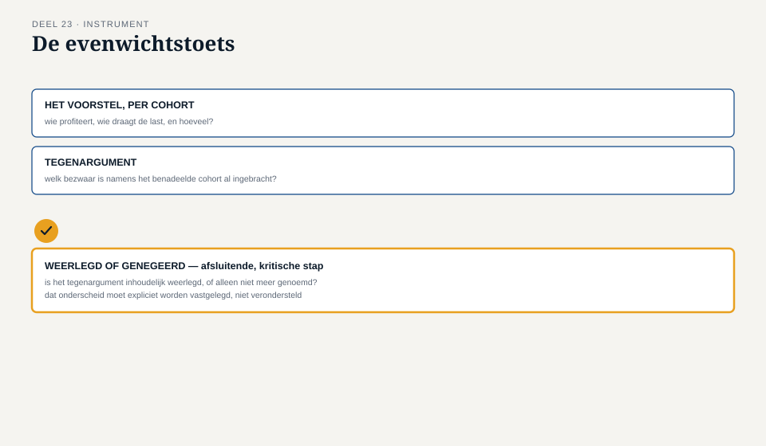

Deel 23 — Strategieanalyse I: de behoefte van de onderneming, niet van de opdrachtgever
Reader · Ductus-cursus Business-analyse · niveau 3 (expert) · deel 23 van 30
23.1 Waar dit deel over gaat
In niveau 1, deel 1, leerde je het onderscheid tussen een probleem en een oplossing. Dit deel behandelt een verwant, maar scherper onderscheid, dat pas op deze schaal echt gewicht krijgt: het verschil tussen wat een opdrachtgever wil, en wat de organisatie — en iedereen die zij vertegenwoordigt — daadwerkelijk nodig heeft. Bij de Stelselovergang is dat onderscheid niet alleen een analytische verfijning. Het is een wettelijke eis: een transitie moet evenwichtig zijn voor alle groepen deelnemers, niet alleen gunstig voor de partijen die aan de onderhandelingstafel zitten.
Aan het eind van dit deel kun je:
- het verschil benoemen tussen de geuite voorkeur van een opdrachtgever en de bredere behoefte van de organisatie die hij vertegenwoordigt;
- vaststellen welke groepen belanghebbenden ongelijk worden geraakt door een voorgestelde keuze, ook als zij niet aan tafel zitten;
- een keuze toetsen op evenwichtigheid, met bewijs in plaats van intuïtie;
- met de evenwichtstoets deze analyse uitvoeren en verantwoorden.
23.2 De casus: Victors voorstel
Uit het casusdossier: Victor Almeida vertegenwoordigt de sociale partners van een van de aangesloten fondsen en levert namens hen het transitieplan aan.
Victor presenteert een keuze uit het transitieplan van zijn fonds: bij het invaren wordt een compensatieregeling voorgesteld die vooral gunstig uitpakt voor deelnemers die nog actief pensioen opbouwen.
“Dit is wat de sociale partners hebben afgesproken,” zegt Victor. “Werkgevers en de vakbonden hebben hier lang over onderhandeld. Dit is hun keuze.”
Merel: “Wie zat er namens de gepensioneerden aan die tafel?”
“Niemand specifiek — de vakbonden vertegenwoordigen doorgaans de actieve leden.”
“En de gewezen deelnemers, die niet meer actief zijn maar ook nog geen pensioen ontvangen?”
Stilte.
Victor heeft niets onrechtmatigs gedaan — sociale partners onderhandelen zoals de wet dat voorschrijft, en het transitieplan is hun wettelijke verantwoordelijkheid, niet die van Meridiaan. Maar Merels taak is niet om het transitieplan te herschrijven; het is om, namens Meridiaan, te beoordelen of de uitvoering ervan houdbaar is — en “houdbaar” omvat hier expliciet de wettelijke eis van evenwichtigheid voor alle groepen, ook de groepen die niet vertegenwoordigd waren aan de onderhandelingstafel.
23.3 De opdrachtgever is niet de onderneming
Dit onderscheid bestond al impliciet in eerdere niveaus — Hanneke in niveau 1 was opdrachtgever, maar niet identiek aan “Meridiaan” als geheel — maar het werd daar zelden een probleem, omdat de belangen van opdrachtgever en organisatie doorgaans grotendeels samenvielen. Bij de Stelselovergang is dat niet langer vanzelfsprekend.
Een opdrachtgever spreekt vanuit een positie: een onderhandelingsresultaat, een politieke werkelijkheid binnen zijn eigen achterban, een tijdsdruk. Dat is legitiem en moet serieus genomen worden — het is niet oneerlijk of kwaadwillend. Maar de onderneming — in dit geval: Meridiaan als uitvoerder, verantwoordelijk voor alle deelnemers van het aangesloten fonds, niet alleen de onderhandelende partijen — heeft een bredere behoefte: een transitie die aantoonbaar evenwichtig is, ook voor wie niet aan tafel zat.
Waarom dit geen wantrouwen is
Het is belangrijk dit onderscheid niet te verwarren met wantrouwen jegens Victor of de sociale partners. Zij doen precies wat de wet van hen vraagt: onderhandelen namens wie zij vertegenwoordigen. Het structurele gat — dat gepensioneerden en gewezen deelnemers vaak geen directe stem hebben in dat onderhandelingsproces — is geen fout van een van de partijen, het is een kenmerk van hoe het proces is ingericht. Precies daarom moet de analyse van Meridiaan dat gat expliciet compenseren, in plaats van te veronderstellen dat “het transitieplan” automatisch alle belangen dekt.
23.4 Groepen die ongelijk worden geraakt
Om vast te stellen of een keuze evenwichtig is, moet je eerst weten welke groepen er zijn, en hoe zij verschillend geraakt worden. Voor een pensioentransitie zijn relevante cohorten onder meer:
- Actieve deelnemers, met verschillen naar leeftijd (een compensatieregeling die gunstig is voor wie nog dertig jaar opbouwt, kan ongunstig zijn voor wie over vijf jaar met pensioen gaat).
- Gewezen deelnemers (“slapers”), die geen pensioen meer opbouwen bij Meridiaan maar wel aanspraken hebben.
- Gepensioneerden, die al een uitkering ontvangen en voor wie de transitie direct hun inkomen raakt.
- Nabestaanden, met een afgeleid maar reëel belang.
Dit is dezelfde discipline als de belanghebbendenkaart uit niveau 1, deel 7, nu toegepast op groepen die zelf geen stem hadden in het onderhandelingsproces dat hun belang zou moeten dienen.

23.5 Evenwichtigheid toetsen, niet aannemen
De wettelijke eis van evenwichtigheid is geen gevoel maar een verantwoording die met bewijs onderbouwd moet worden — vergelijkbaar met hoe niveau 1, deel 9 al liet zien dat waarde pas telt als zij gemeten en aan een belanghebbende gekoppeld is. Drie vragen die deze toets structureren:
Wie wint, wie verliest, en hoeveel? Niet in vage termen, maar met een concrete inschatting per cohort — Nour el Idrissi’s data-analyse is hier onmisbaar.
Is de afweging expliciet gemaakt, of impliciet blijven liggen? Een compensatieregeling die actieve deelnemers bevoordeelt, kan legitiem zijn als dat bewust en beargumenteerd is gebeurd — bijvoorbeeld omdat gepensioneerden via een andere regeling al gecompenseerd worden. Zij is problematisch als niemand die afweging ooit expliciet heeft gemaakt.
Wie zou, als hun stem gehoord werd, het sterkst bezwaar maken — en is dat bezwaar weerlegd of alleen genegeerd? Dit is de kern van de werkvorm van dit deel.
23.6 De werkvorm: de evenwichtstoets
Het instrument van dit deel is de evenwichtstoets: een sjabloon dat een voorgestelde keuze toetst op haar effect over alle relevante deelnemersgroepen, inclusief de groepen die niet aan de onderhandelingstafel zaten.
Het blad
De geuite voorkeur, zoals aangeleverd door de opdrachtgever (hier: het transitieplan via Victor). Geraakte cohorten, met voor elk cohort: wint, verliest, of neutraal — met onderbouwing en bron. Is de afweging expliciet gemaakt? — met verwijzing naar waar dat staat, of de constatering dat dit ontbreekt. Wie zat niet aan tafel, en welk belang vertegenwoordigen zij?
Het veld dat het verschil maakt
Welke deelnemersgroep zou het sterkst kunnen aanvoeren dat deze keuze voor hen niet evenwichtig is — en is dat argument weerlegd, of alleen genegeerd?
Dit veld is de directe toepassing van het principe dat sinds niveau 1, deel 8 door deze cursus loopt — een onderbouwd “nee, dit niet” is net zo waardevol als “ja, dit wel” — nu toegepast op een wettelijke verantwoordingseis in plaats van op een interne aanbeveling. Bij Victors voorstel zou het antwoord zijn: gepensioneerden, die geen stem hadden in de onderhandeling en wier belang bij het voorstel zoals het er nu ligt niet expliciet is afgewogen. Zolang dat argument niet is weerlegd — met bewijs, niet met een aanname dat het wel goed zit — kan Meridiaan het transitieplan niet zonder meer overnemen in het implementatieplan.

23.7 Terug naar de casus
Victors voorstel is geen fout — het is het resultaat van een proces dat, zoals de wet het toestaat, niet elke groep gelijk aan tafel had. Merels taak is niet om Victor terecht te wijzen, maar om, namens Meridiaan, het gat dat dat proces onvermijdelijk laat, zichtbaar te maken en te bepalen of het is gedicht of alleen onopgemerkt is gebleven. Dat is precies wat de evenwichtstoets doet — en precies wat straks, bij indiening van het implementatieplan, van Meridiaan verwacht wordt te kunnen aantonen.
Vooruit naar deel 24. De evenwichtstoets beoordeelt één keuze. De Stelselovergang bestaat uit tientallen zulke keuzes, die samen een veranderstrategie vormen — en die strategie raakt onvermijdelijk de manier waarop Meridiaan als onderneming is ingericht. Deel 24 gaat over veranderstrategie, capability’s, en het raakvlak met businessarchitectuur.